15th Jul 2026
· 35 min read ·
#c
Sieving Primes
Contents
Well, at least for some definition of it.
Note that there are a lot of these kinds of prime optimisation posts
out there, most of them better and
funnier than this one. I’m
mostly writing this for myself, though this may prove useful to a rare
reader someday, perhaps in a somewhat bizarre set of
circumstances.
Special thanks to Kim Walisch’s excellent
primesieve library, as well
as the references
therein,
which made this stuff really easy to learn. Also ngn’s
4.c for some style
inspiration.
Basic setup§
The goal is to get as close toprimesieve -t1 1e9 as possible (which
completes in slightly over 100ms on my machine), using whatever
techniques might be most effective. This in particular means no
multi-core stuff, and I won’t mess with bucket
sieving for large
primes. This is just to constrain the problem space a bit, for my own
sanity.
Additionally, I don’t want to just count the primes using a
Legendre-type formula, which is what e.g.
primecount does. In fact,
I’d like to materialise the full prime array (but see Giving up on
rules), knowing full well that this will incur
some kind of performance penalty.
The repo has some additional
constraints, like not using libc, that I’ll deemphasise in this post.
You might see me importing c.h below somewhere, with a comment
explaining which functions I care about. Replace that with your
favourite combination of math.h, stdlib.h, etc.
Benchmarking§
You’ll see some benchmarks every now and then, so let’s talk about that. This isn’t going to be very fancy—if you’re expecting that, prepare to be disappointed. I used the following flags when compiling;clang version is 21.1.8:
clang -std=gnu23 -s -Wall -Wextra -O3 -march=native -no-pie -nostdlib \
-fno-unwind-tables -fno-asynchronous-unwind-tables -Wl,-n \
-fno-builtin -fno-stack-protector -masm=intel -op a.c
The
wait function is essentially proc.wait(timeout=...), only
it doesn’t poll quite as slowly as that one.def best_time(argv: list[str]) -> float | None:
best = math.inf
for _ in range(3):
start = time.perf_counter()
if not wait(subprocess.Popen(argv, stdout=subprocess.DEVNULL), 1.0):
return None
best = min(best, time.perf_counter() - start)
return best
Sadly, my cpu doesn’t support avx-512, so I won’t get to play around with simd stuff much :(
Notation§
So that we don’t end up producing programs like Clean Code’s prime generator, let’s come up with some notation to make writing these functions more uniform—a kind of consistent vocabulary, if you will. Instead of dumping an entire header file on you, I’ll introduce these as needed above the first code blocks that use them. If you’d rather read through everything in one go, feel free to peruse a.h directly.typedef char C; typedef void V; typedef int I; typedef unsigned long long U;
unsigned long longs, when a simple U will do
the trick just as well.A good compromise is probably the
u64 et al that you’d see in Rust.
For this project, however, that name seems much too long, so I’ll go with the shortened version.#define TY __typeof__
#define _(e...) ({e;})
#define max(x,y) _(TY(x)$x=(x);TY(y)$y=(y);$x<$y?$y:$x)
#define min(a,b) _(TY(a)$a=(a);TY(b)$b=(b);$a<$b?$a:$b)
min and max at some point, so this is as good a time to
introduce them as any.If you’re throwing up into your mouth a little bit right now,
perhaps perusing the appendix
helps. Or maybe not, I don’t know.
Now, I realise this code might look like a
fever dream if you’re not used to it, but bear with me here—I promise
that this strips away enough noise so the algorithms will be clearer to
read. The ({e;}) macro is a gcc statement
expression.
It makes sequences of declarations and statements expression-valued, so
that U a = _(x) works, even if x is a complicated thing.
Defining functions§
Let’s define a function template for all prime searching functions we’ll use. It should get an upper bound on the number, as well as an output pointer to be filled in, and return the array of primes.#define F(f,e...) U* f(U x,U*y){/*...*/}
f is the function name, and e is the body. For now, let’s say
we allocate a big bunch of memory, set some kind of counter, execute the
body, and then just return the array.Btw, just imagine I had to write
here; or, shudder
This gets slightly better with
#define F(f,e...) unsigned long long* f(unsigned long long x,unsigned long long*y){unsigned long long*a=malloc(...); unsigned long long _a=0; *y=0; e; *y=_a; return a;}
#define F(f,e...) unsigned long long* f(unsigned long long x, unsigned long long *y) { \
unsigned long long *a = malloc(...); \
unsigned long long _a = 0; \
*y = 0; \
e; \
*y = _a; \
return a; \
}
uint64_t, but honestly not really.
Maybe it’s because I’m damaged from doing maths for too long, but I certainly know which macro I’d rather read.#include "c.h" // calloc
#define R return
#define M(x) calloc(1,(x)+8)
#define F(f,e...) U* f(U x,U*y){U*a=M(/*...*/); U _a=0; *y=0; e; *y=_a; R a;}
#define A(x) a[_a++]=x
A(x), without having to worry about how this is managed
internally.
An important note about the calloc that I’m using (it’s really
mmap(2)) is that it’s zero-initialised. Since we’ll often actually
allocate a U array and manipulate that, it’s a good thing that mmap
is page-aligned as
well, I guess. The cheeky +8 was revealed to me in a dream; it’s so
that allocations like M(x/8) (which round down) don’t accidentally
touch memory they’re not supposed to.
Let’s make two small optimisations right off the bat, so we won’t have to worry about that later on. First, there obviously aren’t primes between and . There’s a nice upper bound involving the natural logarithm of given by for . We can thread that into the definition of
F, where we fall back
to just 1 if the argument is too small for the upper bound to hold.
// log from c.h
#define F(f,e...) U* f(U x,U*y){U*a=M(8*(x/max(1,log(x)-4)));U _a=0;*y=0;e;*y=_a;R a;}
A. The
way it’s written, you’d check for primality and then add the number if
that check succeeds: if (is_prime(x)) A(x);. However, this really
upsets the branch predictor, which is no good when trying to optimise
something. This is no big deal, though, as we can simply always write
the number into the slot a[_a] and only increase _a if the number
was prime.Incidentally, this is one of the tricks that seem very natural
when looking at this from the point of view of an array
programmer. Funny how those learnings from 1966 are still
relevant.
#define A(x,y) a[_a]=(x);_a+=(y);//array access in F, advance by y
#define A1(x) A(x,1) //if you really mean it
A(x,is_prime(x)). The branch predictor is
very happy about this indeed.perf yielded a reduction in the branch miss rate from around 6% to 0.7%.
Very, very worth it.Iteration§
As a baseline for both performance and reading the notation we’ve introduced, let’s start with just iteration—that is, the algorithm will be of the shapefor i in 2..LIMIT:
A(i,is_prime(i))
is_prime(i) function is just to go through every number
between 2 and i, and check if that’s a divisor of i; if yes, i
is composite. In ordinary C, one might write
#include <stdbool.h>
bool is_prime(unsigned long long i) {
bool p = i > 1; // is prime?
for (unsigned long long j = 2; j < i; j++) {
if (i % j == 0) {
p = false;
break;
}
}
return p;
}
#define I(s,c,n,e...) {for(U i=s;c;n){e;}}//Iterate
#define J(s,c,n,e...) {for(U j=s;c;n){e;}}//Jterate
#define $(x,y) if(x){y;}else //if-then-else
#define B(x,e) $(x,e;break); //break and execute
I and J macros just make iteration shorter, so instead of
for (U j = 2; j < i; j++) {
...
}
J(2,j<i,j++,...)
if and break macros are perhaps a bit more unhinged, but you’ll
get used to them.Note in particular that I’ve written
Using these, the above $(x,e;break); instead of $(x,e;break)—the semicolon is important, as it nullifies the dangling else.
The project started out using just if(x){y;}, but actually the dangling else is quite convenient sometimes.is_prime function becomes
U is_prime(U i){C p=i>1;J(2,j<i,++j,B(i%j==0,p=0));R p;}
A takes a boolean condition.
F(triv,I(2,i<x,i++,C p=1;J(2,j<i,++j,B(i%j==0,p=0))A(i,p)))
alg N time (ms)
--------------------------------
triv 10,000 15.85
14,592 32.00
21,294 64.08
31,072 114.61
45,342 164.81
66,164 314.35
96,549 614.83
140,887 >1s
The simple case§
Two obvious things we can do to maketriv faster are to only walk over
the odd numbers (we already know all even numbers are divisible by two),
and to check divisibility by numbers only up to
(equivalently, numbers such that ). The latter works
because if is composite then it clearly has to have a divisor .
F(simp,A1(2);I(3,i<x,i+=2,C p=1;J(2,j*j<=i,++j,B(i%j==0,p=0))A(i,p)))
triv, only that we start at i=3 (and
thus have to forcefully add 2 to our list of primes), we advance
i+=2, and instead of j<i we check for j*j<=i. Here’s a
side-by-side:
F(triv, I(2,i<x,i++ ,C p=1;J(2,j < i,++j,B(i%j==0,p=0))A(i,p)))
F(simp,A1(2);I(3,i<x,i+=2,C p=1;J(2,j*j<=i,++j,B(i%j==0,p=0))A(i,p)))
triv and simp looks kinda funny, actually:
All times (now and in future) in ms
N triv simp
----- ------- -------
10K 10.07 1.29
22K 36.67 1.78
46K 150.17 2.75
100K 628.66 5.44
215K >1s 13.03
464K >1s 34.49
1.0M >1s 96.50
2.2M >1s 280.83
4.6M >1s 817.69
10.0M >1s >1s
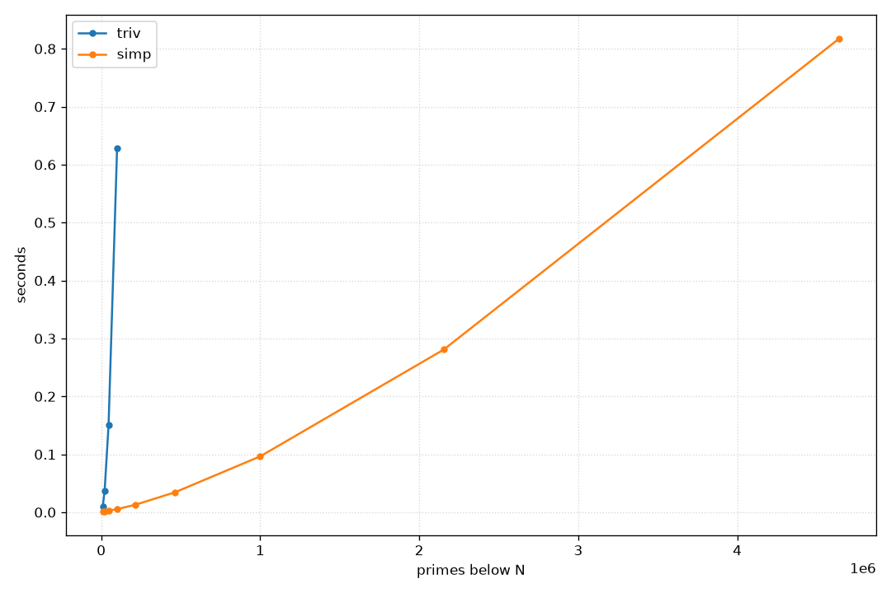
simp, and following this
train of thought leads straight to sieves.
Sieving§
The idea of sieving primes is quite old, still carrying the name of Eratosthenes, who apparently came up with the first version of the algorithm. In fact, the gif on the Wikipedia page is quite good at explaining the basic idea:{kind=link}
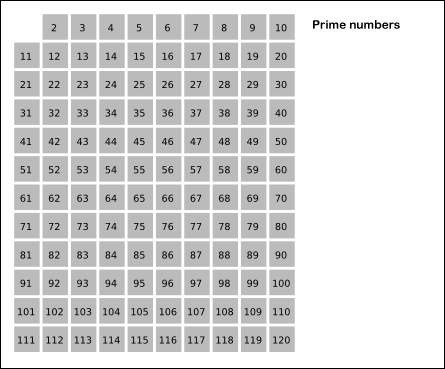
Start with the smallest prime, 2, and mark all multiples of it. After having done so, advance to the next unmarked number—which must be prime for size reasons—and do it all over again. When starting to mark the multiples of a prime , we don’t have to start with (since that has already been marked), nor if , and so on, so the first composite number to be marked is actually . In particular, the marking can stop if , as by the same argument all remaining unmarked numbers are guaranteed to be prime. That’s it for basic theory. The complexity is obviously (primes are weird), which will be quite noticeable when compared with the iteration-based techniques. This will also be the last time that we’ll make any kind of limit-based gains in this post; everything else will be implementation details and awful hacking.A simple sieve§
Let’s just implement the above algorithm essentially verbatim:I’ve cut it in half for the website, but it’s really meant to be read as if it was on a single line.
This will also be the case for the other functions shown here, perhaps you’ll also need to scroll a bit at some point. Sorry.
F(era0,C*E=M(x);I(2,i*i<=x,++i,$(!E[i],J(i*i,j<x,j+=i,E[j]=1)))
I(2,i<x,++i,A(i,!E[i])))
F(era0,C*E=M(x)
E, so whenever
you see that letter, the code will manipulate or otherwise involve that.
In particular, as a convention, allI will go on to immediately break this convention with the
precomputed tables for the wheel sieve, but what can you do. This
is the beauty (or curse?) of notation, as opposed to syntax—rules
can be broken if need be. In this case, it’s mostly for æsthetic
reasons, though; sorry.
arrays in this project will have
upper-case names, so that one can easily distinguish them at a glance.
As said, the M macro gives back a zero-initialised array. Since all
numbers of the sieve should start out with “I’m prime”, 0 means a
number is prime, and 1 means it’s composite. Note that E is a
character array, so we’re representing each 0 or 1 by one byte.
I(2,i*i<=x,++i,$(!E[i],J(i*i,j<x,j+=i,E[j]=1)))
I(2,i*i<=x,++i, // For each number i starting from 2 such that i ≤ √x,
// or equivalently, i² ≤ x.
$(!E[i], // IF the number is prime (E[i]==0)
J(i*i,j<x,j+=i,// THEN start the inner loop at i² in steps of i,
E[j]=1))) // marking each i²,i+i²,2i+i²,... as composite
E are
the primes, so we can add them to the output array:
I(2,i<x,++i,A(i,!E[i]))
)//F(…
simp, era0 is only a few characters longer
F(simp,A1(2);I(3,i<x,i+=2,C p=1;J(2,j*j<=i,++j,B(i%j==0,p=0))A(i,p)))
F(era0,C*E=M(x);I(2,i*i<=x,++i,$(!E[i],J(i*i,j<x,j+=i,E[j]=1)))I(2,i<x,++i,A(i,!E[i])))
N simp era0
------ ------- -------
1.0M 96.23 3.03
1.7M 207.72 4.45
3.0M 444.11 8.52
5.2M 968.55 15.01
9.0M >1s 26.37
15.6M >1s 52.06
27.0M >1s 121.76
46.7M >1s 248.55
80.8M >1s 481.66
140.0M >1s 897.84
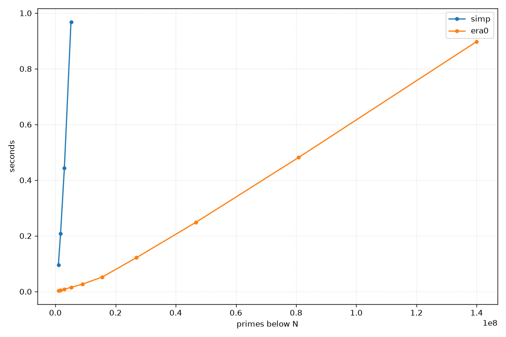
Packing bits§
Instead of using a full byte to represent a single bit, how about we just use a single bit? The general shape of the algorithm doesn’t need to change for this; we just need to replace the getterE[i] and the
setter E[i]=1 with appropriate bit variants.
If E is an array of Us, then each index E[i] holds 64 bits, with
the jth bit of E[i] representing the decision “is this composite?”
for the number 64*i + j. To translate a number n to its associated
index, we thus just have to integer-divide n by 64, use that number to
index into E, compute the offset j as n%64, and select the
appropriate bit using shifts. In formulas, this is
(E[n/64]) & (1ull<<(n%64))
E:
E[n/64] |= (1ull<<(n%64))
E array.Since
E() is a function-like macro, the preprocessor only tries to expand it if E is followed by an opening parenthesis.
This way E and E(x) can unambiguously be parsed as the array/the accessor.#define E(i) _(TY(i)$i=(i);E[$i/64]& (1ull<<($i%64)))//bit
#define Es(i) _(TY(i)$i=(i);E[$i/64]|=(1ull<<($i%64)))//bit set
era0, which I’ll call
era1, looks really quite the same as the original, just that we have
to allocate 8 times less memory:
F(era1,U*E=M(x/8);I(2,i*i<=x,++i,$(!E(i),J(i*i,j<x,j+=i,Es(j))))
I(2,i<x,++i,A(i,!E(i))))
Imagine this side-by-side comparison using ordinary C syntax, btw. Notation really does pay off sometimes.
F(era0,C*E=M(x) ;I(2,i*i<=x,++i,$(!E[i],J(i*i,j<x,j+=i,E[j]=1)))I(2,i<x,++i,A(i,!E[i])))
F(era1,U*E=M(x/8);I(2,i*i<=x,++i,$(!E(i),J(i*i,j<x,j+=i,Es(j) )))I(2,i<x,++i,A(i,!E(i))))
E[i]—more on that later—, the memory gains
mean that a lot more of this stuff fits into the smaller, though faster,
regions of memory, which does pay off:
N era0 era1
------ ------- -------
100.0M 619.57 305.78
110.7M 688.00 345.39
122.6M 791.96 377.72
135.7M 903.29 437.96
150.3M >1s 498.68
166.4M >1s 565.73
184.2M >1s 627.49
203.9M >1s 740.43
225.8M >1s 868.40
250.0M >1s >1s
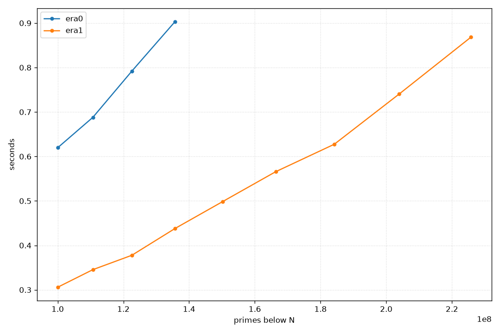
Odds-only§
An immediate optimisation that one could do is to throw away all of the even numbers immediately, just as we did forsimp. This cuts down the
numbers to check by 50%, which would further improve cache efficiency.
Let’s call the version era2. I’ll use era1 as a template, since we
certainly want to pack the binary decision into a single bit again.
F(era2,A1(2);U*E=M(x/16);
x/8 for the
bit-packing and x/(8*2) due to the fact that we are in odds-only
encoding.
I(3,i*i<=x,i+=2,$(!E(i/2),J(i*i,j<x,j+=2*i,Es(j/2))))
i is in reality some number 2*k+1. As such, i/2—being integer
division—extracts the k; feeding that into E() yields the correct
index in E. The inner loop again starts at i*i, but increases in
steps of 2*i: this is because we need to skip i+i*i, 3*i+i*i, and
so on, as these are all even numbers (being the sum of two odd numbers),
which we can’t even represent as an index in E.Yes, this whole project was an incredibly great source of off-by-one errors.
I(3,i<x,i+=2,A(i,!E(i/2)))
)//F(era2...)
N era0 era1 era2
------ ------- ------- -------
100.0M 615.43 307.33 138.87
119.6M 760.60 368.65 172.45
143.0M >1s 458.51 205.59
171.0M >1s 583.20 269.31
204.5M >1s 752.89 321.38
244.5M >1s 959.24 381.86
292.4M >1s >1s 511.19
349.7M >1s >1s 661.78
418.1M >1s >1s 786.27
500.0M >1s >1s >1s
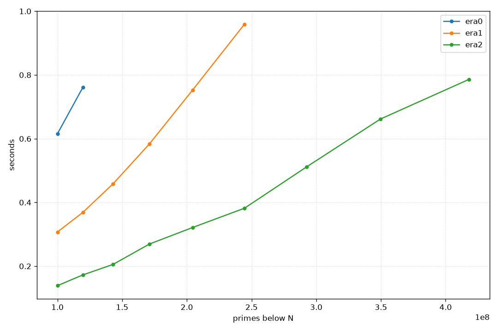
Wheels§
So, how can one improve on the odds-only sieve? One approach is to try and exclude more small primes other than . This is usually called a wheel—the association here being one of those old cart wheels with a few individual spokes, only picking up a few numbers along the way. For the first 100 numbers, the difference between an odds-only sieve and a wheel sieve that also includes3 is having to examine 50 numbers, vs.
having to look at only 33. Note that this doesn’t mean we just skip the
numbers when iterating—this works at the representation level, much like
era2 already had some additional encoding to represent odd numbers
only. In particular, this will make the data representation the cpu has
to juggle much smaller.
A small complication is that the step between numbers will not be
constant any more, so while for era2 we could just advance by two every
time, this is not necessarily the case when incorporating more numbers.
However, the step will at least be periodic in the product of the
primes:
>>> N = [x for x in range(1,101) if x%2!=0 and x%3!=0] # Numbers to investigate
>>> N
[1, 5, 7, 11, 13, 17, 19, 23, 25, 29, 31, 35, 37, 41, 43, 47, 49, 53, 55, 59, 61, 65, 67, 71, 73, 77, 79, 83, 85, 89, 91, 95, 97]
>>> [y-x for (x,y) in zip(N,N[1:])] # Differences
[4, 2, 4, 2, 4, 2, 4, 2, 4, 2, 4, 2, 4, 2, 4, 2, 4, 2, 4, 2, 4, 2, 4, 2, 4, 2, 4, 2, 4, 2, 4, 2]
The other way around, the number at bit is ,
where is if is even, and otherwise.
Given some , its bit position is for and
for , which can be conveniently written as . The addressing scheme we would have to use in this example is
thus /3 instead of /2 as we did for the odds-only sieve.
In general, let be a number that’s the product of some distinct
consecutive primes. Suppose there are integers coprime to in the
range from to . This means we form “blocks” of numbers, each
spanning numbers (since we don’t represent the numbers that aren’t
coprime to ). Hence, a valid is inside of block number
, which is located at bit . Now, all that’s
left is to record the offset of , to find it inside of the block.
Since everything is cyclic, we just have to record the offsets of the
first numbers coprime to , and pick out which one of those fits
using a lookup table.We can even recover
era2 from this: for there is
exactly one coprime residue, so and the offset table is
all zeros. The index of degenerates to .Just two and three already give us a big reduction in numbers to look through, but of course this can be increased by just including more primes. There is a bit of a balance to be struck between having to predefine really quite a lot of numbers, and the resulting efficiency gains. Common wheel sizes are and . I chose the former: for size and alignment reasons, as well as the fact that the gain with the latter is actually not that big: ~27% (8/30) vs. ~23% (48/210) of numbers that have to be inspected. We can apply the general formula for and ; the lookup table looks like this:
C o[30]={[1]=0,[7]=1,[11]=2,[13]=3,[17]=4,[19]=5,[23]=6,[29]=7};
i would then work via
i/30*8+o[i%30]
There’s no theory here, I think, just playing around with numbers a bit.
It mostly comes down to the fact that is the same as
that seems to work:
o[j] for all residue classes,
and so for every number , we have that
But I’m not a number theorist, maybe there’s a “deeper” reason this works.
It certainly fails for a 210-based wheel, so that’s just another reason to choose 30.i/30*8+o[i%30] ≡ 4*i/15
Let’s actually implement
era3 now.
#define P5 A1(2);$(x>3,A1(3));$(x>5,A1(5));//add small primes
#define w(x) (4*(x)/15) //wheel index
F(era3,P5;U*E=M(x/30),m=1;C g[8]={6,4,2,4,2,4,6,2};
x/16 to x/30. Out of 30
numbers, we only have to check 8, which conveniently fits into one byte.
So it comes down to allocating 8*x/30 bits, or x/30 bytes.
The gap array g is exactly the number of steps between the coprime
numbers that we’re checking.
I(7,i*i<x,i+=g[m++&7],$(!E(m),U n=m;J(i*i,j<x,j+=i*g[n++&7],Es(w(j)))))
m keeps track of the offset index
and is a running counter of which bit we’re on. This is because in the
outer loop we’re examining each bit in sequence, so there’s no need for
complex indexing here, it’s just E(m). I guess i+=g[m++&7] has to be
read quite slowly, but at the end of the day it’s not much different
from weird stuff like *p++=q that you see all the time in C. Note
that, if you wanted to use %8 instead of &7, there would need to be
one extra set of parentheses.
Tracing through one iteration, we find that the first number under
consideration is i=7, which is exactly at index m=1. After whatever
happens in the inner loop, we step forward by the required g[1]=4
steps and increase m to 2. Then we do the same thing again with
11, and so on.
Once we’ve found a prime i, the inner loop does essentially the same,
starting at i*i, and then just crossing off each valid multiple.
m=1;I(7,i<x,i+=g[m++&7],A(i,!E(m)))
)//era3
N era1 era2 era3
------ ------- ------- -------
100.0M 308.28 137.73 82.93
127.7M 401.13 183.09 106.45
162.9M 554.98 240.11 146.69
208.0M 752.79 321.40 184.26
265.5M >1s 436.01 248.28
338.9M >1s 595.49 344.21
432.7M >1s 826.98 474.33
552.3M >1s >1s 661.14
705.0M >1s >1s 907.22
900.0M >1s >1s >1s
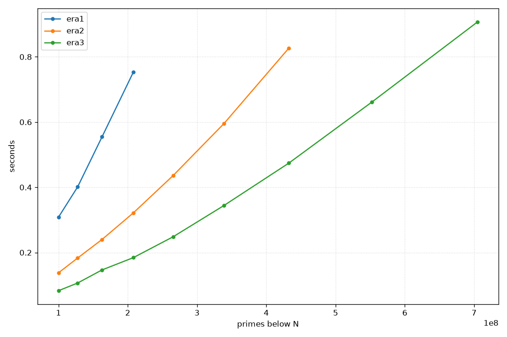
4*j/15, instead of just
j/2—while both compile down to shifts, the former also has some
multiplications with magic constants added in. This will be much more
noticeable later on, but for now I’m quite happy with the performance
improvements of this simple wheel.
Segmentation§
The wheel optimisation is essentially there to improve memory usage, so that more data fits into L1. Another way of achieving this is with a segmented sieve: instead of crossing off all multiples of a prime immediately, work in chunks so that a single chunk exactly fits into the L1 cache. The way this works is that we know primes such that will not do any crossing out anyways, as all of their relevant multiples will have been crossed off before. So, run a normal sieve until , and then just use those primes to cross off the remaining numbers in chunks of an appropriate size. We can create a small helper functioneraH, which takes care of the
small primes:Alternatively, you could also hard-code some small primes and
then run a sort of generation step beforehand, but since we have
the non-segmented sieves anyways…
Btw, I’m using
era2 instead of era3 here since it’s prettier.
Since is very small, it really doesn’t matter.// sqrt from c.h
// x:x, y:number of primes, z:how much to skip
U*eraH(U x,U*y,U z){U*p=era2(1+sqrt(x),y);p+=z;*y=*y<z?0:*y-z;R p;}
z will become clear soon. Let’s roll
with it for now and write era4, based on era2, meaning we’re already
baking in the odds-only sieve. First, a bit more notation:
#define L1 49152//48kib
#define i(n,e...) {U $n=(n);I(0,i<$n,++i,e)}//simple iteration
#define j(n,e...) {U $n=(n);J(0,j<$n,++j,e)}//simple jteration
#define pi(e...) i(_P,U p=P[i];e) //prime iteration
X, the variable _X denotes its size:
F(era4,A1(2);U _P,*P=eraH(x,&_P,1);
P array holds all small primes and _P is its size. We start by
calling eraH, skipping one prime in the resulting array. This is
because the odds-only sieve wants its primes to start at 3, while the
full list that era2 returns of course includes 2 as well. When we
later widen the segmentation to allow wheel sieves, we’ll need to skip
even more numbers, which is why that particular parameter is built into
eraH.
U s=L1*16,*E=M(L1);for(U l=3;l<x;l+=s){
Note that this might not be optimal, as the other data structures
also need to be accessed sometimes, so one might even want a
slightly smaller allocation here. Playing around with it however,
it seems that access to
Since each byte holds 8 bits, and
we don’t represent even numbers, each iteration through E actually dominates, so I chose the
exact size of my L1.E actually
touches s=L1*16 numbers, so that’s the stride length. We start at 3,
since that’s the next odd (= representable) number we haven’t checked
yet.
U h=min(x,l+s);i(L1/8,E[i]=0);
x doesn’t need to fall exactly on the end of a stride, so
h is the upper bound for this iteration. Since we’re re-using E
every time, we zero it before proceeding.
pi(J(max(p,(l+p-1)/p|1)*p,j<h,j+=2*p,Es((j-l)/2)))
(l+p-1)/p in C. The
max(p,...) is there since, if l<p, then (l+p-1)/p would return 1
(which then becomes p by the multiplication following the max), but
we actually want to start searching from p*p as before. The little
|1 after getting the index is a hack to make sure we start at an odd
multiple of p, since we can’t represent even ones in this encoding.
In each step, we readjust j when indexing into E (since the array
only holds a single segment), and then increase in steps of 2*p, again
to skip the even multiples.
I(l,i<h,i+=2,A(i,!E((i-l)/2)))
}//for(...)
)//era4
l to h in
steps of two, and just need to again make sure to check the correct
element in E. The start l of each segment is always odd, since we
start at 3 and increase it by an even number, so there’s no correction
term to be applied here.
Since everything fits into L1 now, how about we switch out the packed representation for a slightly less packed one? If we represent a boolean by a
char, we can profit from fast array access instead of
bit-twiddling, which may or may not improve things. In the language
we’ve defined, this just amounts to switching out E(i) with E[i] and
Es(i) with E[i]=1. Here’s the whole thing in two lines, as intended,
aligned with era4 to showcase the differences:
F(era4,A1(2);U _P,*P=eraH(x,&_P,1),s=L1*16,*E=M(L1);for(U l=3;l<x;l+=s){U h=min(x,l+s);i(L1/8,E[i]=0);
pi(J(max(p,(l+p-1)/p|1)*p,j<h,j+=2*p,Es((j-l)/2) ));I(l,i<h,i+=2,A(i,!E((i-l)/2)))})
F(era5,A1(2);U _P,*P=eraH(x,&_P,1),s=L1*2;C*E=M(L1);for(U l=3;l<x;l+=s){U h=min(x,l+s);i(L1, E[i]=0);
pi(J(max(p,(l+p-1)/p|1)*p,j<h,j+=2*p,E[(j-l)/2]=1));I(l,i<h,i+=2,A(i,!E[(i-l)/2]))})
N era2 era3 era4 era5
------- ------- ------- ------- -------
100.0M 147.04 82.43 92.83 64.95
129.2M 185.26 109.76 121.02 84.45
166.8M 247.19 145.09 154.63 109.07
215.4M 327.63 188.63 207.25 141.73
278.3M 466.80 252.52 270.55 193.87
359.4M 649.83 373.72 332.22 247.44
464.2M 927.44 506.73 439.30 314.22
599.5M >1s 763.87 573.08 417.01
774.3M >1s >1s 754.38 568.20
1000.0M >1s >1s >1s 733.29
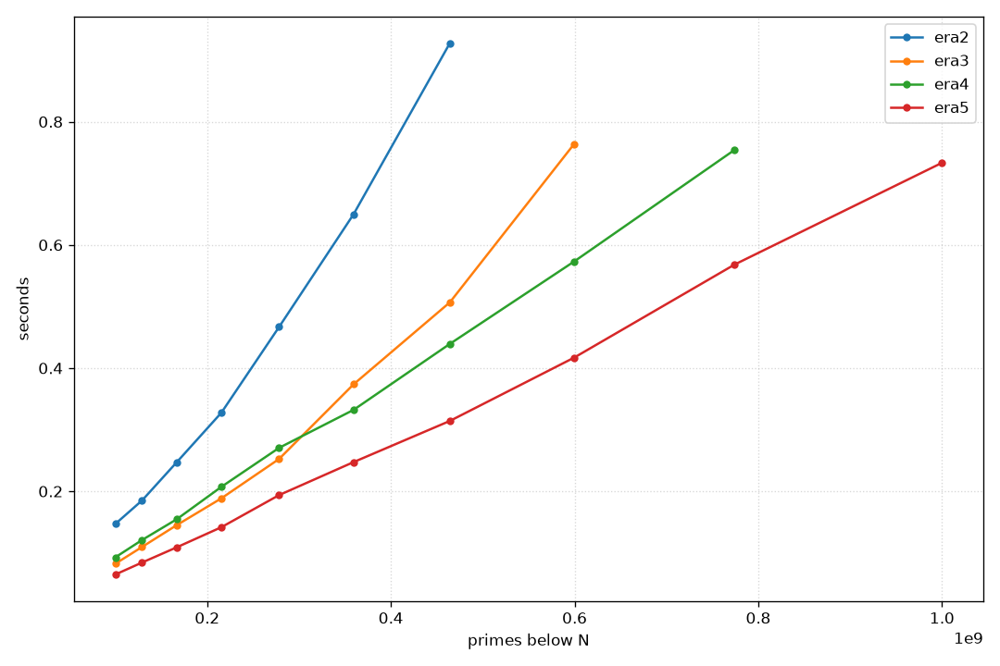
perf reports around 15 billion instructions for era4, but only 10 billion for era5!This is a good point to reflect on what we’ve done so far—I think it’s really quite impressive: we’re at ~700ms for all primes under a billion, in just two lines of code! Anyway, onwards and upwards.
Wheeled segmentation§
Applying the idea of segmentation to a wheeled sieve is not that much more complicated conceptually, but a bit fiddly in the actual implementation. Since a wheel very much skews towards bit-packing, let’s also useera4 as a base, instead of era5.From some cursory tests, a byte-based wheel is around 15% slower than a bit-based one. Optimisation is weird.
F(era6,P5;U _P,*P=eraH(x,&_P,3),s=L1*30,*E=M(L1);for(U l=0;l<x;l+=s){
U h=min(x,l+s);i(L1/8,E[i]=0);$(l==0,Es(0));
l is 0.
Since we go up in steps of s, which is a multiple of 30, this ensures
that l will always be divisible by 30, so that indexing via w(j-l)
later on always stays valid. Also, in the very first loop we’ll have to
mark 1, the number at index 0, as composite. This is a bit of an
annoying special case, but I haven’t found a good way around
it—suggestions welcome.
C g[8]={6,4,2,4,2,4,6,2},
o[30]={[1]=0,[7]=1,[11]=2,[13]=3,[17]=4,[19]=5,[23]=6,[29]=7},
r[30]={1,0,5,4,3,2,1,0,3,2,1,0,1,0,3,2,1,0,1,0,3,2,1,0,5,4,3,2,1,0};
pi(U f=max(p,(l+p-1)/p);f+=r[f%30];U m=o[f%30];
J(f*p,j<h,j+=p*g[m++&7],Es(w(j-l))));
p above l, so we again
start with max(p,(l+p-1)/p). Not as before, it’s now a bit more
complicated to find out when we’ve hit a “bad” multiple—instead of just
preventing even-ness, we need to disallow any of the 22 numbers not
coprime to 30 in a single interval. Hence, we need to “jump” from any
such number to the next highest one that’s coprime to 30, which is
exactly what the r lookup table (“round”) does. Then, since we might
start on any coprime, we also need to know which index it has in the
wheel. In era3 we always started at 7, so we would just set m=1, but
here we need yet another lookup table o (“offset”) to jump to the
correct position.
After that, it’s business as usual, starting our search at f*p and
increasing in steps that are reasonable for the wheel.
U m=0;I(l+1,i<h,i+=g[m++&7],A(i,!E(m)))}
)//era6
N era3 era4 era5 era6
------- ------- ------- ------- -------
100.0M 83.38 93.25 64.67 62.21
129.2M 108.11 118.91 83.91 78.05
166.8M 143.95 155.49 107.10 100.36
215.4M 191.96 199.95 142.12 134.07
278.3M 255.28 256.79 186.89 168.95
359.4M 357.68 337.80 250.05 229.71
464.2M 512.11 453.39 327.27 310.18
599.5M 741.32 563.87 411.95 361.88
774.3M >1s 747.24 539.81 480.69
1000.0M >1s >1s 712.80 710.96
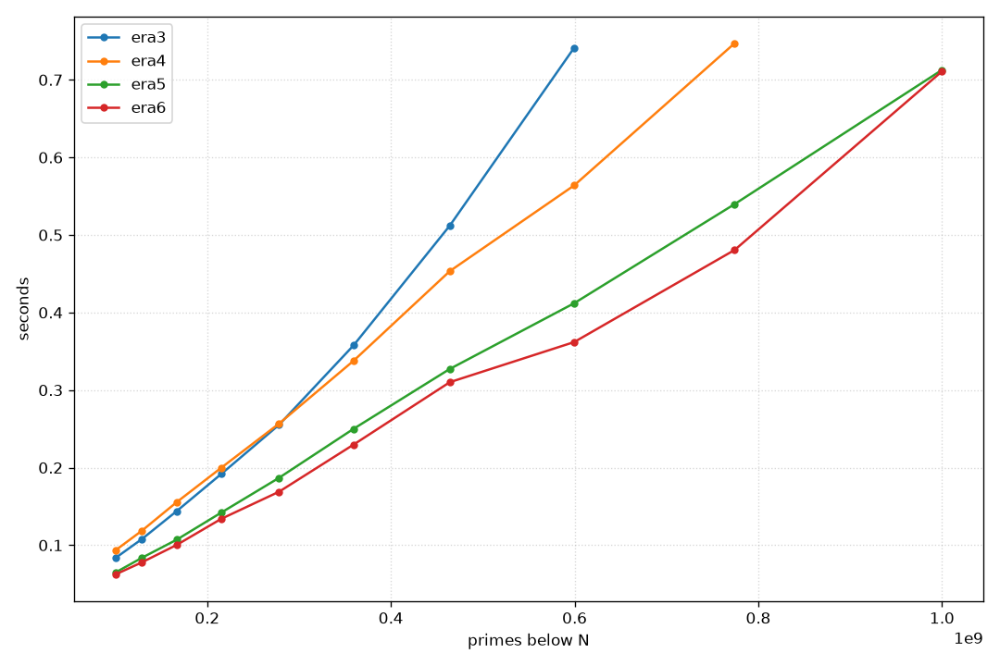
4*j/15 over j/2 is finally
catching up to us.
Presieving§
Another optimisation we might try is to presieve small primes and tile them intoE at every segment. The setup here, with a presieved stencil
and another surprise later on, very much lends itself to bit-packing
again.
Let’s first look at this for an odds-only sieve, as—at least for my smol
brain—it’s much easier to understand than its wheeled relative. For
that, let’s introduce just a tad more notation:
#define P11 P5;$(x>7,A1(7));$(x>11,A1(11));//more primes
#define CTZ(x) __builtin_ctzll(x)//count trailing zeros
#define W(x,e) while(x){e;}
1 bit in
a bit sequence, and the more compact while loop will allow us to write
down some kind of convergence process in a reasonable way. Let’s first
start with the actual function, though:
F(era7,P11;U _P,*P=eraH(x,&_P,5),_S=3*5*7*11;C*S=M(_S),Q[4]={3,5,7,11};
_S=1155 is the product of
the small primes that we aren’t ignoring outright (like 2).I could have included 13 here as well, but some preliminary benchmarks tell me that that’s not really any faster.
Really, the most important ones are 3, 5, and 7, the rest is window-dressing.
This
will serve as the period of the prime stencil S we’ll use. Notice
that, a priori, _S is actually a period in bits. We can however
still just allocate _S bytes for S, since 1155 and 8 are coprime, so
it’ll also be periodic as a byte length.
U _E=42*_S,*E=M(_E),s=16*_E;
E again: _S is , so bytes neatly fit
into 48KiB. Since this is an odds-only sieve, the stride for each
segment is again _E*2*8.
i(4,C q=Q[i];J(q/2,j<8*_S,j+=q,S[j/8]|=1<<(j&7)));
S. Due to the encoding,
the start index of each prime q is q/2, and each multiple will
exactly be at some index n*q/2, so just increasing q/2 by q every
time crosses all of them off. Since j is a bit index but _S is the
number of bytes, we have to incorporate this into the check for when to
stop. Marking works on a per-byte basis, with the same logic as the Es
macro.
for(U l=0;l<x;l+=s){U h=min(x,l+s);i(_E,((C*)E)[i]=S[i%_S]);$(l==0,Es(0));
i(_E/8,E[i]=0), we now copy over the segment
cyclically, tiling all of E. Note the cast to C*, since that’s what
S is.
pi(J(max(p,(l+p-1)/p|1)*p,j<h,j+=2*p,Es((j-l)/2)))
U hb=(h-l)/2;E[hb/64]|=-(1ull<<(hb%64));
Shamelessly cribbed from ngn’s excellent 4.c.
which will be good training
for the denser wheels below. Instead of going through all of the numbers
and checking which one is a prime via I(l,i<h,i+=2,A(i,!E[(i-l)/2])),
we instead use the fact that we already know which numbers are
prime, and can instead reconstruct them from their packed
representation.
We first get the number of valid sieve bits as hb. In the E array,
composite numbers are assigned 1 and primes get 0. However, the
array starts off zero-initialised. So if hb is not exactly divisible
by 64, which will probably be the case, it might be that the last
64-bit word of E has a few high bits that are 0 because of that
initialisation, not necessarily because the numbers these bits represent
are prime. To fix this, we can do some bit twiddling: get the remainder
of dividing hb by 64 and shift it to the correct position;
1ull<<(hb%64) will be something like
0...010000...0
1...100000...0
E.
i((hb+63)/64,U z=~E[i];W(z,A1(l+1+2*(64*i+CTZ(z)));z&=z-1))
})//F(era7,...)
E in 64-bit chunks, negate the array to turn all zeros
into ones and the other way around, and reconstruct each number in
the chunk: the index of the rightmost 1 is the number of trailing
zeros, which we first shift by 64*i to get to the correct chunk, then
double it and add one to undo the odds-only compression, and finally add
the segment start l. Then just force-add it to the array.
This gives a small boost after a certain point:
N era4 era5 era6 era7
------- ------- ------- ------- -------
100.0M 92.63 64.47 59.47 50.24
129.2M 119.35 84.56 76.49 65.66
166.8M 159.74 109.87 100.30 86.94
215.4M 201.89 141.78 136.02 108.16
278.3M 256.99 186.63 168.53 141.88
359.4M 332.61 242.31 227.74 181.73
464.2M 459.20 321.82 295.08 235.95
599.5M 606.25 427.67 432.14 346.90
774.3M 764.65 558.69 503.31 396.39
1000.0M 968.54 733.35 670.41 538.10
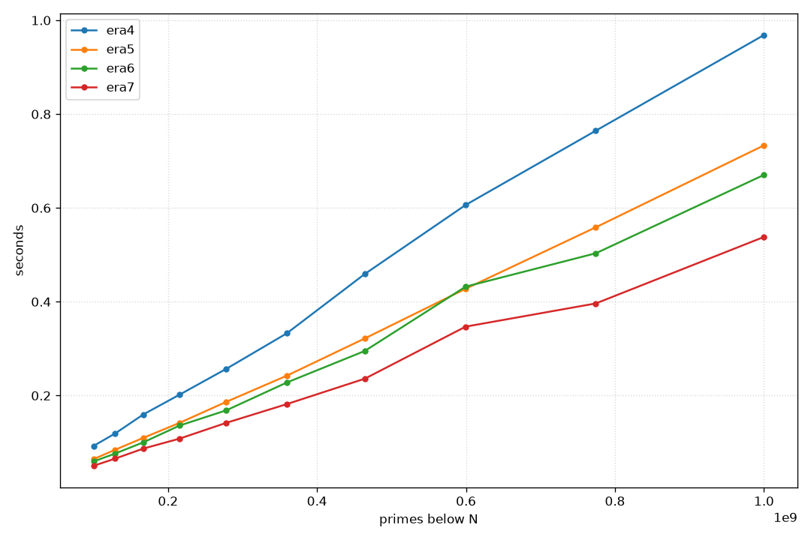
Giving up on rules§
At this point, I slowly ran out of ideas on what to do that might have a measurable impact, without bloating the code size too much. I also really wanted to do something with wheel sieves—I feel like they’ve just been fine performance wise, but haven’t really wowed me at all. This is a real shame, as the basic idea seems quite beautiful. If you measure it, a lot of the work is actually spent building the array, and at 1e9 the array is, like, 400MiB in size. Completely unnecessary, and actually not a great comparison withprimesieve,
which doesn’t materialise the whole array at all. In fact, it doesn’t
even tell you the highest prime in that range; it just counts!Though, as said before, it doesn’t use counting-specific algorithms like
If
we bit-pack the primes, counting can be done much more rapidly with a
popcount instruction, which is quite a bit faster than what we’re doing
right now.
So, I’m willing to forgo the rule that the entire array needs to be
materialised for these last two examples, just to see what’s possible. I
also won’t compute the highest prime, though adding this isn’t super
difficult. I’ll leave it as an exercise for the interested reader.
These will be wheel sieves, so let’s fix the hard-coded stuff
here—nothing new.
primecount does.#define Z static
Z C g[8]={6,4,2,4,2,4,6,2},
o[30]={[1]=0,[7]=1,[11]=2,[13]=3,[17]=4,[19]=5,[23]=6,[29]=7},
r[30]={1,0,5,4,3,2,1,0,3,2,1,0,1,0,3,2,1,0,1,0,3,2,1,0,5,4,3,2,1,0};
F function template, but create a new one
that correctly signals intent.
#define G(f,e...) Z V f(U x,U*y){*y=0;e;}//cheating
#define POP(x) __builtin_popcountll(x)
#define P13_ ++*y;$(x>3,++*y);$(x>5,++*y);$(x>7,++*y);$(x>11,++*y);$(x>13,++*y);
Wheeled presieving§
As a basis, let’s implement a wheeled version ofera7, without a
backing array.
G(era8,P13_;U _P,*P=eraH(x,&_P,6),_S=7*11*13;C*S=M(_S),Q[3]={7,11,13};
U _E=48*_S,s=_E*30,*E=M(_E);
i(3,U q=Q[i],m=0;J(q,j<30*_S,j+=q*g[m++&7],S[w(j)/8]|=1<<(w(j)&7)));
era7, only that we now index into
the wheel instead. We start at q instead of q/2, since it’s not as
easy to bake the index into the start, so I’m letting w() do all of
that work. As such, we need to take care that 4*j/15 doesn’t exceed
8*_S, which is the same as checking that j<30*_S. The steps are thus
also not constant, but again vary by the gap size.
for(U l=0;l<x;l+=s){U h=min(x,l+s); i(_E,((C*)E)[i]=S[i%_S]);$(l==0,Es(0));
pi(U f=max(p,(l+p-1)/p);f+=r[f%30];U m=o[f%30];J(f*p,j<h,j+=p*g[m++&7],Es(w(j-l))));
U hb=w(h-l+r[(h-l)%30]);E[hb/64]|=-(1ull<<(hb%64));i((hb+63)/64,*y+=POP(~E[i]))
})//G(era8, ...)
E, but once that’s done, all that’s needed is
but a tiny popcount to update y. The calculation of hb becomes a bit
more involved, but it’s essentially just w(h-l), with a small
correction term in case h-l is not coprime to 30, as the number
still needs to be representable.
This gives a significant boost—not necessarily due to the wheel, but
mostly just because the array-less approach is so much faster.
N era6 era7 era8
------- ------- ------- -------
100.0M 63.13 52.16 29.15
129.2M 77.90 64.95 35.09
166.8M 99.21 82.02 46.01
215.4M 128.58 107.64 58.34
278.3M 169.85 141.04 78.24
359.4M 226.03 178.46 102.31
464.2M 283.17 234.89 133.13
599.5M 365.55 303.65 180.97
774.3M 492.92 418.51 228.37
1000.0M 686.37 516.16 304.23
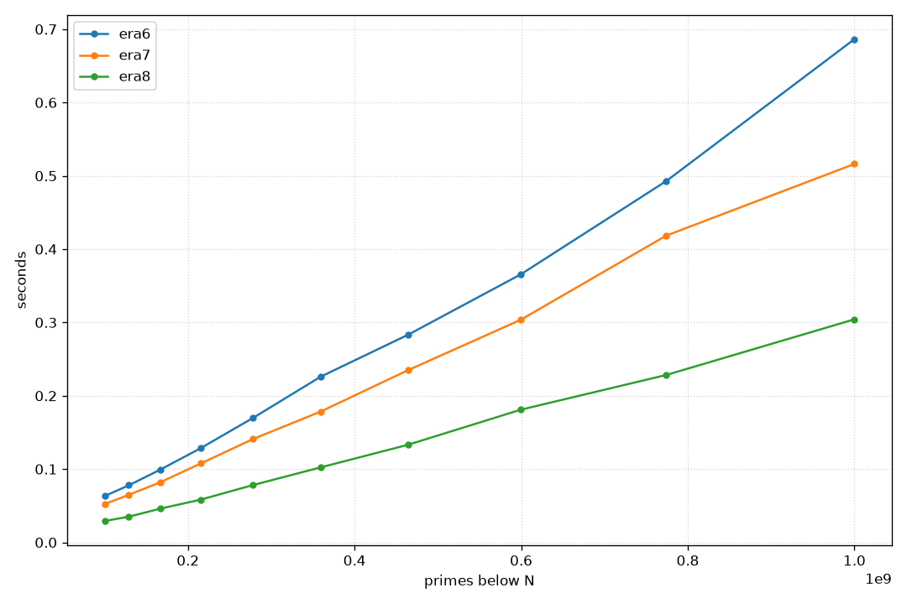
Fixed steps§
It’s finally time I stop complaining about4*j/15 being slow, and just
fix it. There’s another part of the code that slows us down, though:
instead of a simple constant 2*p-stride, we have this variable
j+=p*g[m++&7] nonsense. Both of those are rather terrible for reading
and for execution; let’s try to at least fix the latter.
The necessary insight is that there are constant stride lengths lurking
inside of a wheel, but instead of being global, they’re inside of a
residue class. I think I will defer the exact explanation of how this
works until we see the code, as it’s a bit involved, so let’s just get
right into it.
G(era9,P13_;U _P,*P=eraH(x,&_P,6),_S=7*11*13,_E=48*_S,*E=M(_E),n=30*_E;
C*S=M(_S),Q[3]={7,11,13},*cE=(C*)E;
i(3,U q=Q[i],s=0;J(q,j<30*_S,j+=q*g[s++&7],S[w(j)/8]|=1<<(w(j)&7)))
for(U l=0;l<x;l+=n){U h=min(x,l+n);i(_E,cE[i]=S[i%_S]);$(l==0,Es(0));
U hb=w(h-l+r[(h-l)%30]);
era8, so I won’t comment
on them again here. We again try to get as close to the L1 limit as
possible with the size of E, and the rest follows. Also, the presieving
step is exactly the same code as in era8.
pi(U f=max(p,(l+p-1)/p);f+=r[f%30];U m=o[f%30],z=f*p-l;
z a name now (booo!), as we’ll
manually increment it.
j(8,U b=w(z);B(b>=hb,);U mk=1<<(b&7),B=b/8,hB=(hb+7)/8;
W(B<hB,cE[B]|=mk;B+=p)
z is the
first multiple of p in this segment, b is its bit-, and B its
byte-index. Since we’re marking one byte at a time, we can use a mask
mk, with a 1 at exactly the right place. hB is the number of bytes
that are currently set, which’ll serve as an upper bound for iteration.
The actual marking loop W(B<hB,cE[B]|=mk;B+=p) is what makes this
version fast—compare cE[B]|=mk with
Es(w(j-l)) ≡ _(U $i=4*(j-l)/15; E[$i/64]|=(1ull<<($i%64)))
fth multiple of p. The next number in the same
residue class is p*(f+30), the next one after that is p*(f+60), and
so on. In other words, all numbers of a single class differ by 30*p.
Since each byte exactly covers 30 numbers, the next byte with a multiple
of p in the same residue class is B+p. Marking is just flipping the
bit associated with the current residue class in E, which we index
byte-wise via cE. The mask itself doesn’t change for a single residue
class (more or less by definition), so it’s really a constant stride
inner loop.
z+=p*g[m++&7]
)//j(8,...)
)//pi(...)
j(8,U b=w(z);B(b>=hb,);U mk=1<<(b&7),B=b/8,hB=(hb+7)/8;
W(B+3*p<hB,i(4,cE[B+i*p]|=mk);B+=4*p);W(B<hB,cE[B]|=mk;B+=p);
z+=p*g[m++&7])
)//pi(...)
E[hb/64]|=-(1ull<<(hb%64));i((hb+63)/64,*y+=POP(~E[i]))
}//for(...)
)//era9
Even more precomputation§
I swear this is the last optimisation we’ll do, which I’ll just fold intoera9 directly: precomputing the offset at which b moves. I’ll
just highlight the changes. At the start, we have to allocate a gap
array U *G=M(64*_P). The 64 is 8*8, as we have eight residue
classes. Then, before the main loop over the segments, we precompute the
steps:
pi(U m=1,n;j(8,n=m,m+=g[j];G[8*i+j]=w(p*m)-w(p*n)))
p and index i gets the indices 8*i to 8*i+7, which
are filled with exactly the step length to the next residue class.
With that in place, the inner marking loop can become
pi(U*Gp=G+8*i;/*f=...*/;U b=w(f*p-l);
j(8,B(b>=hb,);U mk=1<<(b&7),B=b/8,hB=(hb+7)/8;
W(B+3*p<hB,i(4,cE[B+i*p]|=mk);B+=4*p); W(B<hB,cE[B]|=mk;B+=p);
b+=Gp[m++&7]))
b+=Gp[m++&7] with the old z+=p*g[m++&7]. It seemingly only
saves us that unpredictable multiplication with p, but this version is
actually consistently around 10ms faster than the non-precomputed
version. The cognitive overhead when reading the code is around the
same, I think, so I’ll keep it in.
Here’s the final algorithm in all of its glory:
G(era9,P13_;U _P,*P=eraH(x,&_P,6),_S=7*11*13,*G=M(64*_P),_E=48*_S,*E=M(_E),n=30*_E;
C*S=M(_S),Q[3]={7,11,13},*cE=(C*)E;i(3,U q=Q[i],s=0;J(q,j<30*_S,j+=q*g[s++&7],S[w(j)/8]|=1<<(w(j)&7)))
pi(U m=1,n;j(8,n=m,m+=g[j];G[8*i+j]=w(p*m)-w(p*n)))for(U l=0;l<x;l+=n){U h=min(x,l+n);
i(_E,cE[i]=S[i%_S]);$(l==0,Es(0));U hb=w(h-l+r[(h-l)%30]);pi(U*Gp=G+8*i,f=max(p,(l+p-1)/p);f+=r[f%30];
U m=o[f%30],b=w(f*p-l);j(8,B(b>=hb,);U mk=1<<(b&7),B=b/8,hB=(hb+7)/8;W(B+3*p<hB,i(4,cE[B+i*p]|=mk);B+=4*p);
W(B<hB,cE[B]|=mk;B+=p);b+=Gp[m++&7])) E[hb/64]|=-(1ull<<(hb%64));i((hb+63)/64,*y+=POP(~E[i]))})
N era6 era7 era8 era9
------- ------- ------- ------- -------
100.0M 60.79 51.19 27.30 9.33
129.2M 82.47 63.61 35.22 12.11
166.8M 100.33 82.97 45.32 15.52
215.4M 130.64 106.52 61.22 22.22
278.3M 172.20 152.28 77.87 29.48
359.4M 225.90 178.93 111.02 36.43
464.2M 298.50 266.34 143.21 50.70
599.5M 430.99 309.69 191.89 65.28
774.3M 525.78 411.50 248.11 88.40
1000.0M 729.23 545.91 336.01 116.19
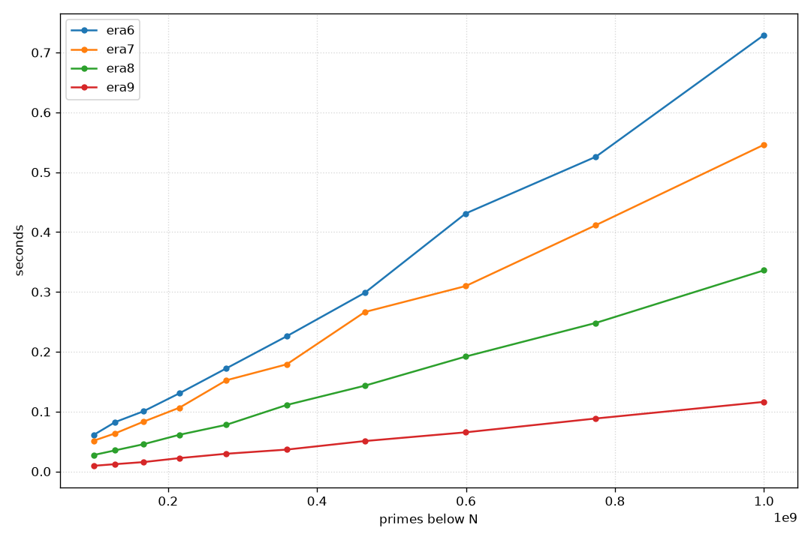
I think this is a good time to stop—if only because
era10 would
completely destroy the alignment, and continuing in hex looks weird.
Also, this still neatly fits on my screen without me having to decrease
the font size, or being forced to use overly long lines:
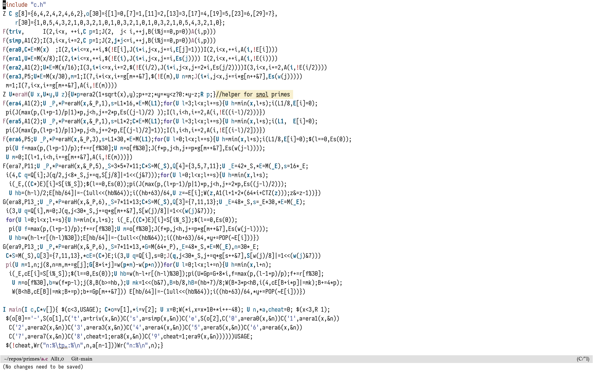
The end§
Here are all of the variants: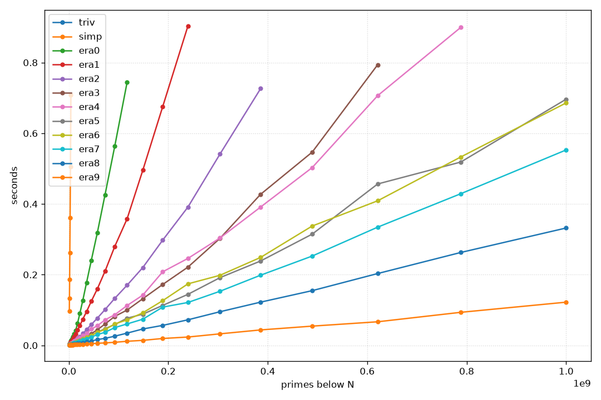
The table is entirely too big for a sidenote, so here it is in a drawer.
N triv simp era0 era1 era2 era3 era4 era5 era6 era7 era8 era9
------- ------- ------- ------- ------- ------- ------- ------- ------- ------- ------- ------- -------
1.0M >1s 96.45 2.87 2.85 2.44 1.65 1.83 1.62 1.57 1.46 1.56 0.91
1.3M >1s 133.82 3.40 3.40 2.13 1.83 2.24 1.83 1.95 1.97 1.40 1.06
1.6M >1s 186.44 4.12 4.05 2.96 1.91 2.70 2.00 2.10 1.73 1.32 1.40
2.0M >1s 261.25 5.92 5.63 3.00 2.28 2.98 2.25 2.64 1.87 1.46 1.73
2.6M >1s 360.36 6.96 6.03 4.07 2.49 3.59 2.42 2.61 2.17 1.84 1.06
3.3M >1s 505.69 9.23 7.19 4.19 3.02 4.31 2.97 2.95 2.63 1.76 1.93
4.2M >1s 708.60 12.81 9.80 4.82 3.57 5.02 3.48 3.69 3.37 1.93 1.52
5.3M >1s >1s 14.79 10.99 5.89 4.53 6.18 4.32 4.18 3.78 2.35 1.79
6.7M >1s >1s 19.56 13.99 7.34 4.99 7.65 4.71 5.10 4.30 2.96 1.45
8.5M >1s >1s 25.04 17.63 9.13 6.21 9.30 6.18 6.25 5.28 3.12 1.59
10.8M >1s >1s 32.48 23.95 11.71 7.71 11.36 7.38 7.66 6.59 4.07 2.06
13.7M >1s >1s 42.44 32.40 14.47 8.82 13.80 8.99 9.33 7.51 4.26 2.60
17.4M >1s >1s 61.88 42.95 19.19 11.44 17.61 10.89 11.40 9.38 5.21 2.40
22.1M >1s >1s 90.01 56.35 24.34 14.56 21.55 14.04 14.26 11.95 6.34 2.97
28.1M >1s >1s 127.14 74.00 33.27 18.28 27.41 17.70 18.14 14.97 7.89 3.25
35.6M >1s >1s 177.53 95.26 44.61 23.89 33.81 21.75 22.79 19.07 9.68 3.66
45.2M >1s >1s 240.48 124.83 58.86 33.11 45.94 27.94 28.37 23.28 12.39 4.82
57.4M >1s >1s 318.85 159.92 77.10 44.09 55.48 36.74 37.39 30.27 16.40 6.00
72.8M >1s >1s 425.98 209.65 101.14 60.37 72.07 47.26 44.55 37.11 19.81 6.90
92.4M >1s >1s 563.49 279.82 132.98 81.96 86.63 58.88 60.64 50.24 25.99 8.67
117.2M >1s >1s 744.33 358.16 170.27 99.92 112.75 76.88 71.99 60.64 34.65 11.58
148.7M >1s >1s >1s 495.27 220.13 131.91 142.11 88.22 92.12 73.98 46.31 14.17
188.7M >1s >1s >1s 675.12 297.59 172.19 208.07 112.99 126.48 108.19 56.52 19.46
239.5M >1s >1s >1s 903.49 391.23 221.35 245.96 144.35 174.01 121.32 72.31 23.56
303.9M >1s >1s >1s >1s 541.06 302.64 303.65 191.49 198.22 153.02 95.13 32.62
385.7M >1s >1s >1s >1s 726.35 427.34 391.30 238.71 248.83 198.50 122.30 43.70
489.4M >1s >1s >1s >1s >1s 546.64 502.92 314.65 337.60 252.66 154.78 54.44
621.0M >1s >1s >1s >1s >1s 793.78 706.32 456.51 408.93 334.38 203.16 66.73
788.0M >1s >1s >1s >1s >1s >1s 899.35 518.50 532.83 428.91 262.75 93.48
1000.0M >1s >1s >1s >1s >1s >1s >1s 696.30 685.83 552.79 331.99 122.19
Besides the fact that I much rather prefer things that can be proven over things that have to be measured, but I knew that beforehand.
Feels more “real”.
Mostly that optimisation is weird and messy, I
guess, but also that some memory is just actually more equal than
others. AlmostBut see
every performance improvement came down to that:
pack the sieve into bits so that more of it fits into the smaller
caches, make that even better by not representing numbers that are easy
to reject statically, and make that even even better by working in
chunks so that the bulk of the work is always done in L1. Cheating and
just not accessing slow memory much at all by refusing to materialise
the entire array also works. It’s quite surprising how much one can
squeeze out of “just look at your hardware, duh” (and I definitely am
still far from doing that to its full extend).
Finally, an actual comparison against era5 being faster than era4 since, once everything fits into L1, other things become important again.primesieve:
hyperfine speeds primesieve up for unknown reasons.$ primesieve -t1 1e9
Sieve size = 256 KiB
Threads = 1
100%
Seconds: 0.105
Primes: 50847534
$ ./p -e9 1000000000
n:50847534
$ hyperfine 'primesieve -t1 1e9' 'taskset -c 0-3 ./p -e9 1000000000'
Benchmark 1: primesieve -t1 1e9
Time (mean ± σ): 81.6 ms ± 4.1 ms [User: 79.5 ms, System: 1.5 ms]
Range (min … max): 74.5 ms … 94.9 ms 30 runs
Benchmark 2: taskset -c 0-3 ./p -e9 1000000000
Time (mean ± σ): 117.4 ms ± 4.6 ms [User: 115.5 ms, System: 1.2 ms]
Range (min … max): 110.8 ms … 130.5 ms 25 runs
Summary
primesieve -t1 1e9 ran
1.44 ± 0.09 times faster than taskset -c 0-3 ./p -e9 1000000000

Appendix: On the coding style§
I guess I can’t stop without briefly talking about the elephant in the room, which is why I chose toI sometimes wonder if this is a subconscious act of defiance against the over-commented slop that a lot of LLMs produce en masse nowadays;
in the spirit of staying illegible, although I don’t think this is what the author had in mind.
and I figured I
might try it out for something kind of trivial, which I however don’t
have a good grasp on, just to see how it works out.
I think it went quite well. It certainly delivered on me being able to
get all variants on a single screen.
Would I use this again? Yes, but probably with some changes. The
complete lack of comments is a bit jarring, especially for this kind of
optimisation project, containing lots of magic numbers—like, what does
4*j/15 mean and how does it work? However, this seems to have a nice
solution: using ghc-style
notes!
This way, the code can still be clean, and afterwards some notes can
explain some of the more tricky decisions. Maybe I’ll come up with
another project to learn about an area of computer science that I’ve
never played with, and try it out. Or maybe I’ll write normal looking
code again at some point, who knows.
Have a comment? Write me an email!